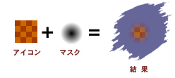

アイコンは Finder 上でいくつかのサイズで表示されます。アイコンは1つのサイズを作成すれば他のサイズはシステムソフトウェアによって自動的に拡大縮小されて表示されますが、より良い表示結果を望むのでしたら各サイズのアイコンを作成する必要があります。これらのサイズすべてを作成しない場合、大きいサイズのものを作成してそれから小さなサイズを自動生成させる方が小さなサイズを拡大して表示するよりも見栄えがする結果が得られます。
“Iconographer”のサポートしているすべてのサイズについての説明を御覧下さい：

ミニサイズ：16 x 12
色深度：8-ビット、4-ビット、 1-ビット、1-ビットマスク
詳細：このアイコンのみサイズが正方形ではありません。このアイコンは使用箇所が限られていています。主に、Mac OS 8.x/9.x の最小アイコンに使用されます。
対応フォーマット：Mac OS 旧形式、Mac OS 新形式、Mac OS 汎用
スモールサイズ：16 x 16
色深度：32-ビット、8-ビット、4-ビット、1-ビット、8-ビットマスク、1-ビットマスク
詳細：リスト表示の時のファイル、フォルダとして表示されるサイズです。メニューバーなどで使用されるアイコンです。
対応フォーマット：Mac OS 旧形式、Mac OS 新形式、Mac OS 汎用、Windows 形式、Windows XP 形式、Mac OS X Server 形式

ラージサイズ：32 x 32
色深度：32-ビット、8-ビット、4-ビット、1-ビット、8-ビットマスク、1-ビットマスク
詳細：最も一般的なアイコンサイズです。Mac OS X 以前のシステムでの標準アイコンサイズです。
対応フォーマット： Mac OS 旧形式、Mac OS 新形式、Mac OS 汎用、Windows 形式、Windows XP 形式、Mac OS X Server 形式

最大サイズ：48 x 48
色深度：3-ビット、8-ビット、4-ビット、1-ビット、8-ビットマスク、1-ビットマスク
詳細：主に、Mac OS X Server 環境下で使用されています。このサイズは Mac OS X では、アイコンサイズを縮小した時に使用されます。
対応フォーマット：Mac OS 新形式、Windows 形式、Windows XP 形式、Mac OS X Server 形式

サムネイルサイズ：128 x 128
色深度：32-ビット、8-ビットマスク
詳細：Mac OS X での標準アイコンサイズです。このサイズから指定したアイコンサイズまで自動的に縮小して表示します。
対応フォーマット：Mac OS 新形式
アイコン色深度
各サイズのアイコンには各種の色深度(色数)のものが含まれています。これは、あなたの作成したアイコンに白黒(1-bit)、16色(4-bit)、256色(8-bit)、1670万色(32-bit)とさまざまな色深度のアイコンを持たせることが出来るということです。Finder はその画面上で使用出来る色深度のアイコンを自動的に選択します。アイコンは1つの色深度のものを作成すれば、画面の色数が不足している場合アイコンは自動的に減色されて表示されますが、より良い表示結果を望むのでしたら各色深度のアイコンを作成する必要があります。
アイコンマスク
各アイコンがアイコンピクチャーとアイコンマスクの2つから成り立っていることは良くわからないかも知れませんが、アイコンマスクとは実際に表示されるアイコンを御覧になるとわかると思いますがアイコンは正方形ではなく画像内の各種形状に切り抜かれて表示されます。そのためにアイコンの表示する部分と透明にして表示しない部分とを設定するものがアイコンマスクです。下の画像でアイコンマスクがどのように機能するかを説明します：
上の画像からわかるようにアイコンマスクの外側の白色の部分のアイコンは表示されずにデスクトップが見えます。この２色の単純なアイコンマスクでは黒色がアイコンを実際に表示する色で白色がアイコンを透明にして表示しない色となっています。MacOS 8.5 以降で追加された8 bit のアイコンマスクをサポートしました。これは、白色から黒色までの256色のグレースケールグラデーションでアイコンをマスクすることが可能になります。白色や黒色ではないその中間の灰色はアイコンと背景を半透明にするために使用します。下の画像は、8 bit のアイコンマスクがどのように機能するか説明するものです：

上の画像の結果でアイコンの周囲がデスクトップに溶け込んだように表示されているのがわかると思います。そのため、どのような色の背景にアイコンを置いた場合でもきれいに溶け込んで表示されるでしょう。8 bit のアイコンマスクは半透明のアイコンを作ったり、アイコン周囲のギザギザした部分を滑らかにしたり、下に落ちた影などの視覚効果のために使用することが出来ます。
8 ビットマスクは Mac OS 新形式やでサポートされていますが、新しく、Mac OS 汎用や Mac OS X、Mac OS X Server、Windows XP アイコン形式でもサポートしました。
アイコンの形式
Mac OS 旧形式（リソース）：この形式は、Mac OS 8.5 以前のシステムで使用されています。1-bit から 8-bit までの、32 x 32 と16 x 16 ピクセルのアイコンで構成されています。この形式は、文書アイコンや十分な互換性(MacOS 8.5 以降でも表示することができるため)を得るためにも最小限必要です。
Mac OS 新形式（リソース）：この形式は、Mac OS 8.5 から採用されたものです。32-bit のアイコンと 8-bit のマスク、48 x 48 サイズのアイコン(通常 Finder で直接使用されることはありませんが、 Sherlock 2 の検索ボタンなどで使用されています)が追加されました。これらのアイコンは今までのものと全く異なる形式で保存されているため古いシステムでは表示することは出来ません。
Mac OS 汎用（リソース）：旧形式と新形式のリソースを同じ ID で同じファイルに結合する見せかけの形式です。その結果、アイコンはどのシステムでも表示することが可能になります。また、MacOS 8.5 以降のシステムで表示される場合、より良い描画結果が得られます。これにより、わずかですがファイルサイズが大きくなってしまいます。
Mac OS X 形式（.icns ファイル）：Mac OS X では、Mac OS 新形式に含まれるすべてのアイコンと新しく追加された128 x 128 サイズのアイコンのすべてをサポートしています。リソースフォークの使用を削減し【.icns】という拡張子のついたファイルにアイコン情報を含ませるようになりました。
詳しい情報は その他の形式のアイコンについて を御覧下さい。